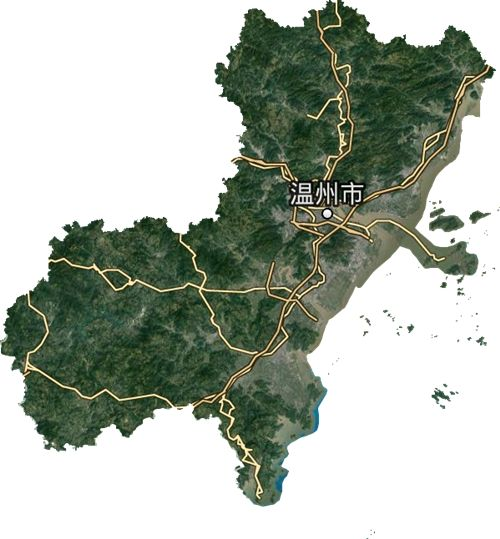
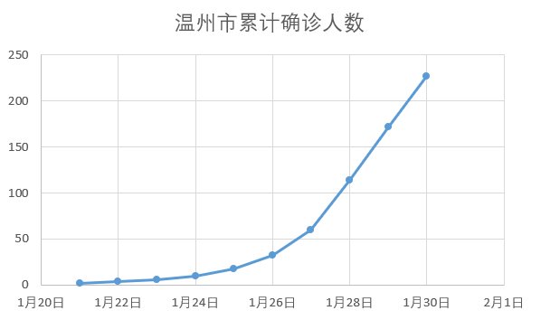

封城后的鄂州：这里没有太多新闻
原文链接 备份链接 “ 我以为离开湖北就是安全的，没想到我让女儿过了一个没有地方住的新年。 鄂州，距离武汉只隔50km，距离黄冈只隔一座鄂黄大桥，这个被本地人自嘲是“肉夹馍”的城市，一向不被大多数人关注。 在封城期间，鄂州人的日常生活是怎 …
31.01.2020
本文字数：2022，阅读时长大约3.5分钟
导读：武汉封城后，1月23日至27日5天，仍旧有1.88万人从湖北特别是武汉到达温州，平均每天有3600多人。
作者 | 第一财经 吴将
截至1月31日早上8点，新型冠状病毒肺炎仍在发酵——除了湖北省各市之外，最严重的城市新增确诊病例55例，累计227例，不但远超北京、上海，甚至还超过了紧邻湖北、人口众多、地缘辽阔的重庆（206例），高居全国第六——你可能不一定会想到，这座城市竟是远离武汉千里之外的温州。
那么为何，温州这次会成为疫情重灾区？

湖北是温州人的“第二故乡”？
首先，很多人可能并不了解，温州地区其实是全国人口最密集的区域之一。温州全市常住人口为925万人，位居浙江省第二，仅次于杭州的980万。人口密度为774人/平方公里，是全国的5.5倍，全省的1.4倍。在人口密度最高的鹿城区，达到4399人/平方公里。
再加上浙江省“七山二水一分田”的地形特点，近千万温州人口都集中在东部沿海的少量平原地段，因此实际上的人口密集程度远比统计数据上显示的更大。

另一方面，改革开放后，温州人以热衷抱团经商而闻名于世。据悉，全球各地有200多万温州商人，其中在湖北就超过20万，主要集中在武汉，因此不少温州商人把湖北或武汉称为“第二故乡”。
1月29日，温州市副市长汤筱疏在新闻发布会表示，确诊人数猛增与武汉返温的人员基数大有关：“在武汉经商、就学和务工的，有18万温州人。”
汤筱疏称：“截至目前，温州已排查出武汉及其周边回温3.3万人，这与温州发病曲线和回温人员高潮成正比的。源头阻断任务很重，武汉封城后，1月23日至27日5天，仍旧有1.88万人从湖北特别是武汉到达温州，平均每天有3600多人。”
一位在武汉从事服装生意的朋友对第一财经记者表示，在武汉的温州人以经商为主，如果他们有回家过年的打算，通常不会等到法定假日，而是提前数日返温，以避开春运。由于春节前一周，疫情尚未全面爆发，当时从武汉返温并不会受到任何阻碍，也不用测体温，或许这正是造成春节后温州疫情瞬速爆发的重要原因之一。
人情往来越频密风险越高
温州的商人们爱抱团，这已是公开的秘密，也是他们事业有成的要素之一。由于温州自古地处偏僻、交通不便、方言复杂，加上地方又不大，因此每个县城、乡镇都很容易形成一个典型的“熟人社会”。在“熟人社会”里，人与人之间都被一张巨大而紧密的关系网链接在一起，因为随时可能与自己的利益相关，所以人与人之间的关系尤为重要，大家都会不约而同地努力去维护，而家族内部、亲戚之间的关系无疑更是重中之重——春节前后集体聚餐、拜年、相互串门正是维持这种“人情”关系的核心手段。
显然在大多数时候，抱团都会是一种优势，可以互补长短。但在防疫阶段，这却是一个巨大的隐患。
试想一下，通常情况下，一位已婚的温州中年男子在过年期间仅在近亲内部就至少要参加四次聚餐，即父亲一系、母亲一系、岳父一系、岳母一系。这还不算拜访可能在邻县的远亲、亲朋好友的婚礼、孩子满月酒、搬迁新居等等。按照温州当地的习俗，以上都要摆酒、聚餐，如果无故缺席，则会让亲人“脸上无光”。
此外，节后去给每一位长辈拜年也是必不可少的流程。粗略一算，整个流程下来，一位已婚温州中年男子在过年期间会接触到的亲戚人数起码在50人以上。可想而知，如果其中一人是病毒感染者，其他人被感染的风险会有多高，并将给防疫工作带来多大的困难。

市民此前防疫意识不足
据第一财经记者的亲身经历，春节前夕，温州下属的某人口大县县城，并无看到任何疫情预防措施，聚餐、聚会也照常进行，街上人来人往，未见有人戴口罩。
1月25、26日，温州确诊人数开始暴涨时，当地县政府才关闭了大部分的公共场所，并宣布取消一切大型文体、集会等活动。
尽管如此，当时市民们的防疫意识仍然不够。第一财经记者27日上街发现戴口罩的人数不足五成，人潮涌动的菜市场也照常开放，没有任何管制或测体温等措施，只有多家仍在营业的知名快餐品牌连锁店员工全部带上了医用防护口罩。
另据身边一位友人透露，尽管26日麻将室等公众娱乐场所已被禁止营业，但仍有个别麻将室私下偷偷开门，据其称，当时他发现一家麻将室的后门开着，进去一看发现一间10平方米左右的麻将室聚集了6~7个人，且其中近半人没有戴口罩。后来，因被举报，这间麻将室才被迫停业。
1月29日，温州累计确诊人数超过了100人。当地县政府终于对菜市场加紧的防范，只留了下一个出入口，并安排了人员测体温。当晚，温州政府宣布关闭14个高速出口。
同日，温州乐清市公安局披露称，“该市3名不配合新型冠状病毒感染肺炎疫情防控工作的市民均被处以行政拘留。”其原因是，三名从湖北返乡的人员，在观察期间离开家里到公共场所活动，带来疫情防控风险。
1月30日，第一财经记者注意到县城各大小区都被安排了出入口控制及测体温人员，街上超过95%以上的人都戴上了口罩。
截至1月31日早上9点30分，温州共确诊227例、重症14例、治愈出院7例，暂无死亡病例。
温州人民正在努力和病毒就生存的权力进行斗争，希望疫情拐点尽快到来。
【推荐阅读】
UP主实拍：“空城”武汉的物价、交通 、生活状态


原文链接 备份链接 “ 我以为离开湖北就是安全的，没想到我让女儿过了一个没有地方住的新年。 鄂州，距离武汉只隔50km，距离黄冈只隔一座鄂黄大桥，这个被本地人自嘲是“肉夹馍”的城市，一向不被大多数人关注。 在封城期间，鄂州人的日常生活是怎 …
原文链接 备份链接 《战疫口述记》，是燃财经在新型冠状病毒肺炎期间推出的特别栏目，记录疫情亲历者的观察和感受。本文为第3篇，查看前2篇请点击《农村这样防肺炎》《我在武汉战肺炎》。 作者 | 苏琦 金玙璠 孟亚娜 唐亚华 孔明明 魏佳 …
原文链接 备份链接 医疗防护资源不足是常态，各地资源调配需平衡，“灯下黑”区域渐次光亮，但少数地区的疫情宣传依旧不到位 外地务工返乡者最担忧的问题是年后经济收入断流、地域歧视，担心节后可能无法返工 本文首发于南方人物周刊 文 | 本刊记 …
原文链接 备份链接 离开湖北境内的时候，我百感交集。我的父母和亲友还在那里，他们将会面临什么，谁也不知道。 作为一个去过疫区、带着孩子又成功离开的湖北人，我有责任把这几天的历程客观记录下来，希望能够给诸多还在恐慌中的人多少一些参考意义。 …
原文链接 备份链接 突发的疫情搅乱了这个春节。武汉封城后，居民被迫留在家中、医护人员无法离开工作岗位，吃饭成了问题。与此同时，餐饮、休闲、商超便利等生活服务业也面临巨大考验。 作为居民和商家的连接点，一群隶属于本地生活服务平台的留守外卖 …